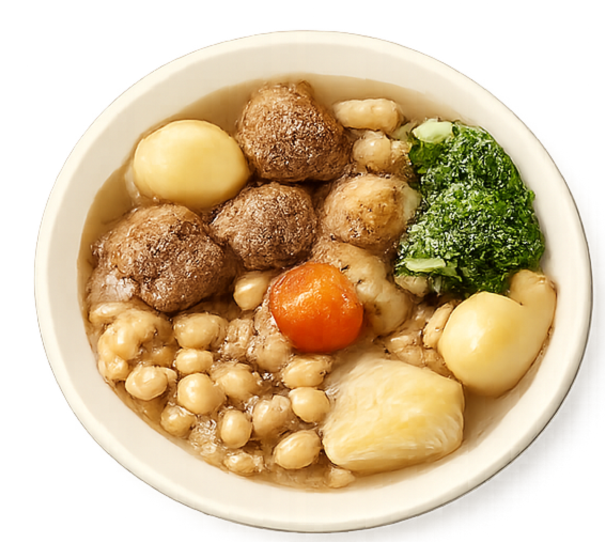
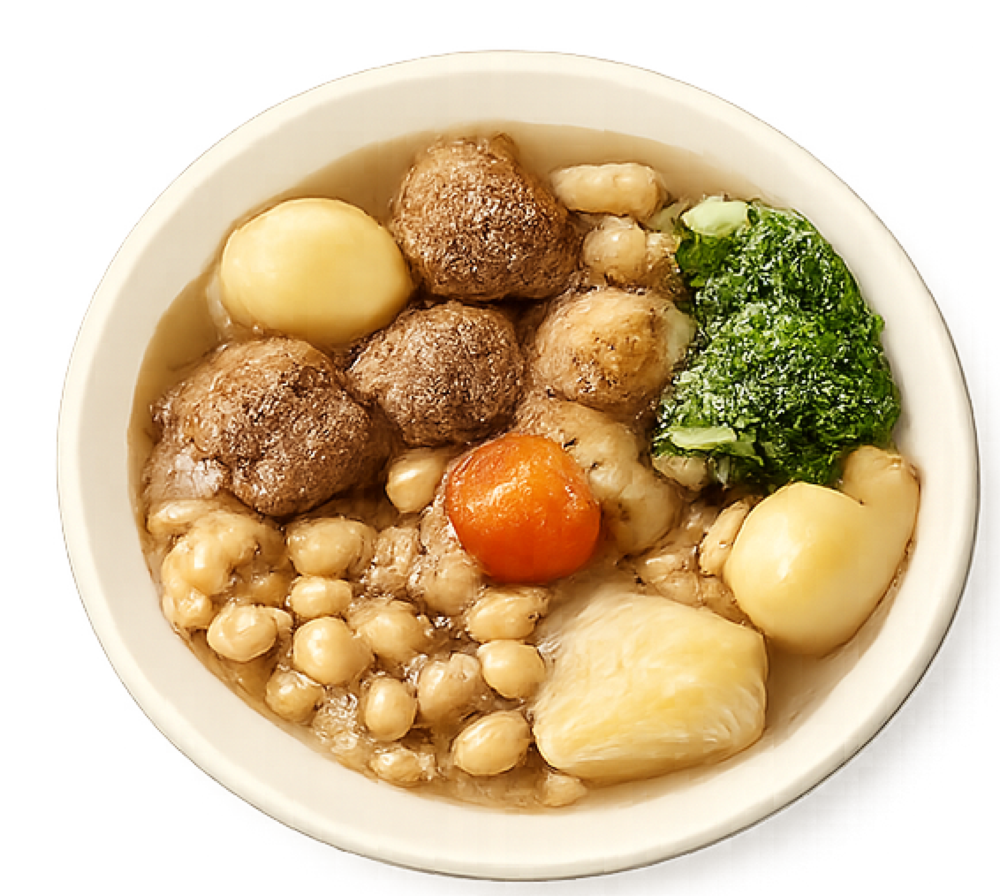
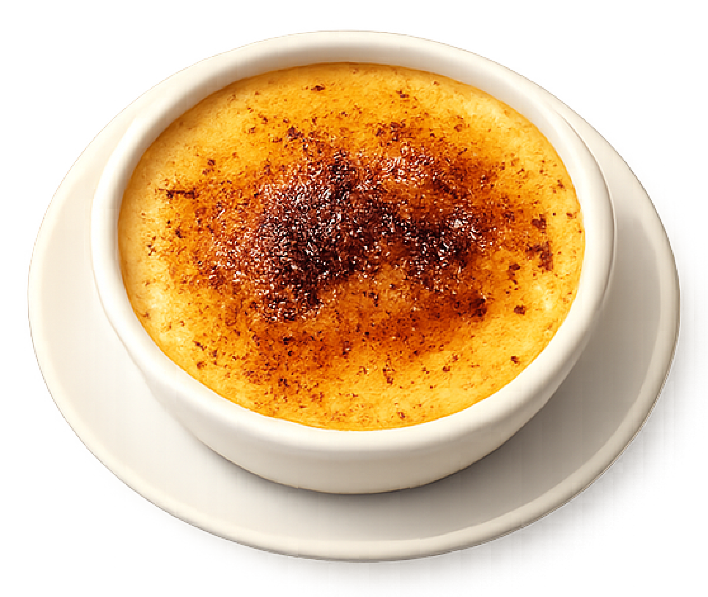
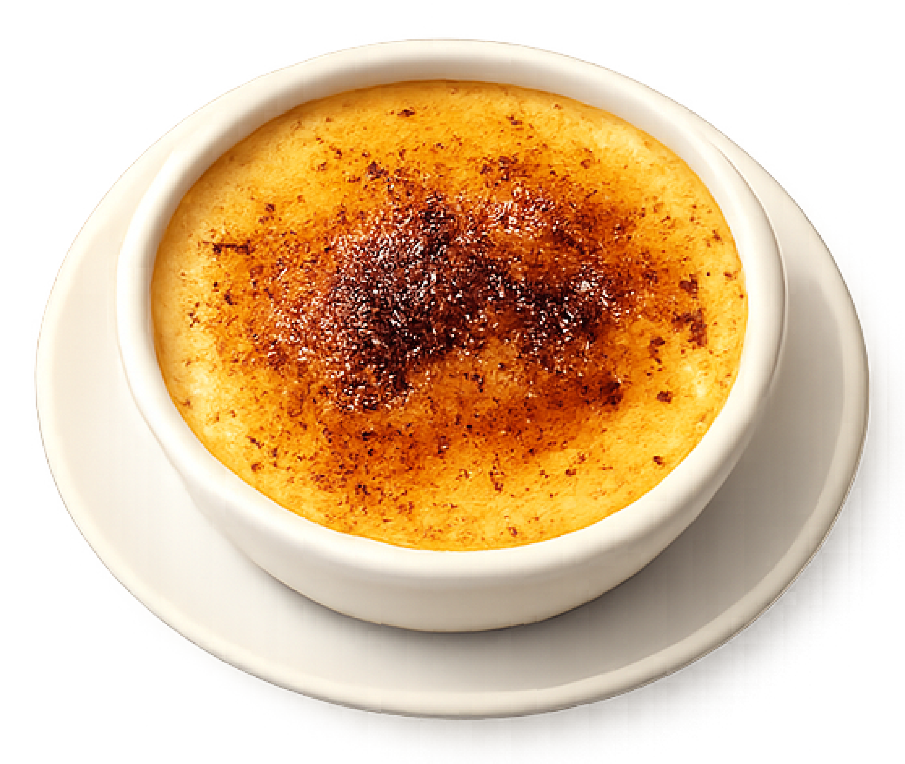
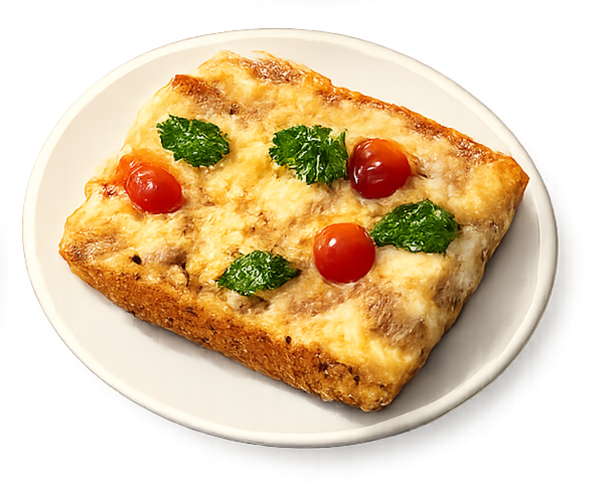
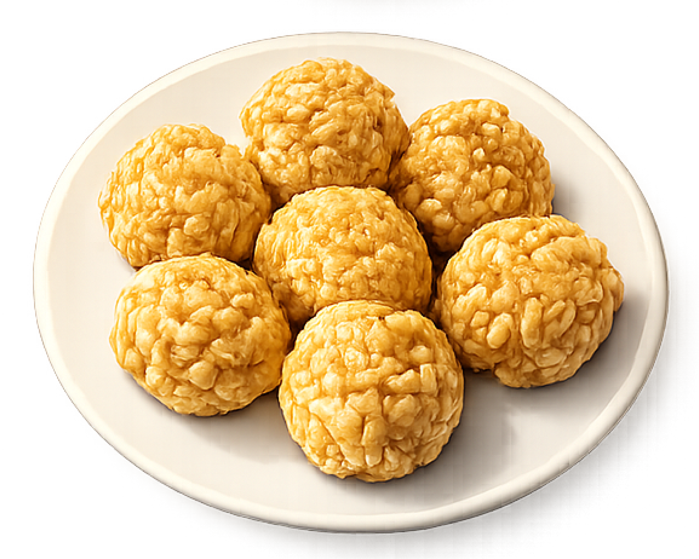
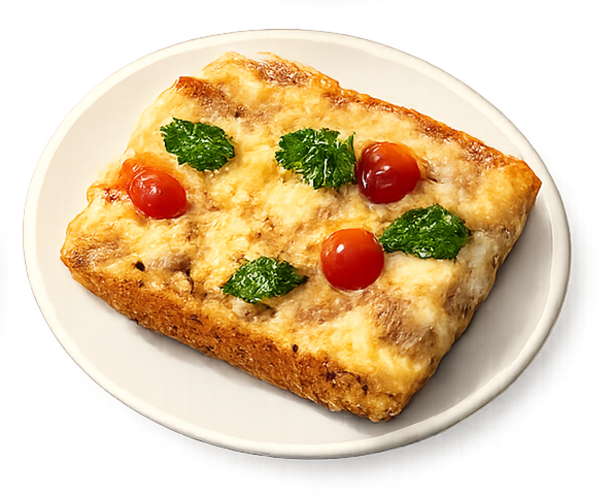
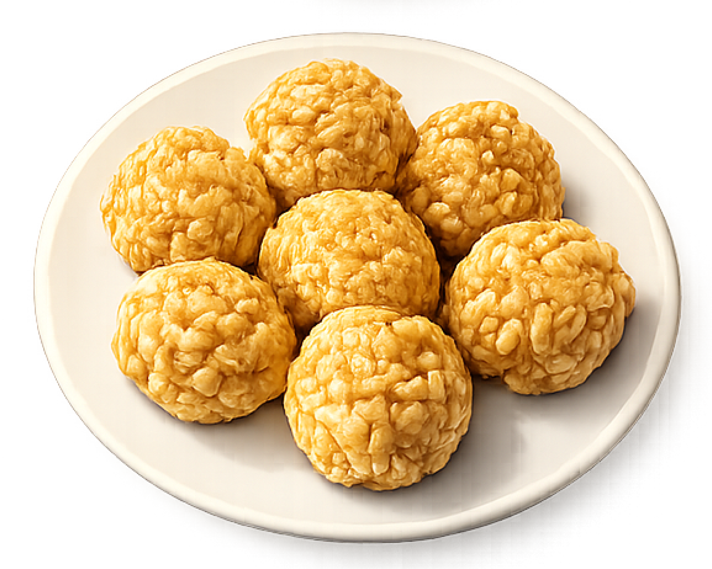

About
Maria Garcia
Catalan Dishes is an interactive website that explores some of the most traditional and culturally significant dishes from Catalonia. The project presents food as a cultural and social element, highlighting how certain recipes carry history, identity, and shared meaning within Catalan culture.
The website is organized into three categories—Starters, Main Dishes, and Desserts—each featuring dishes that are representative of Catalan cuisine. The main page is designed as a virtual table where all the dishes are displayed. Users can drag and rearrange the plates freely within the table space, recreating the experience of interacting with food in a real, shared setting.
By clicking on a dish, users can access detailed information, including the dish’s name, its translation from Catalan to Spanish, a brief description of its ingredients, and a cultural or historical note explaining its relevance or symbolism in Catalonia. A navigation menu on the left allows users to filter the content by category, making it possible to view only starters, main dishes, or desserts.
Through interaction and exploration, Catalan Dishes invites users to engage with Catalan culinary heritage in a playful yet informative way, transforming traditional food culture into an accessible digital experience.
Designed and developed by Maria Garcia
Graphic Design student, Rhode Island School of Design


 



 

 


